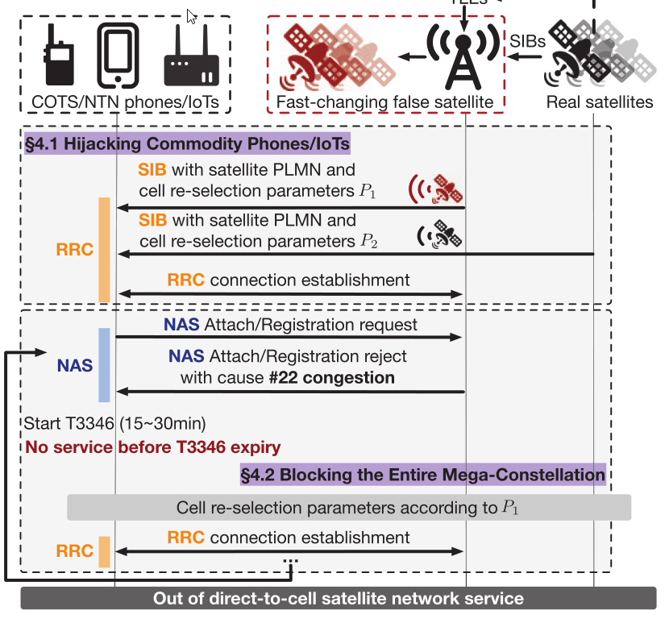

论文标题:The Dark Side of Scale: Insecurity of Direct-to-Cell Satellite Mega-Constellations
SatOver攻击
现在有很多低轨道卫星: LEO
这个要比传统的同步轨道卫星更难攻击L:
- 更强的抗干扰性：
- LEO卫星距离用户10-100倍更近，信号更强。
- 采用相控阵天线（如Starlink 6-8个波束、Iridium 20-46个波束），支持频率跳变以对抗干扰。
- 备份卫星多：
- 每个地区通常由8-49颗LEO卫星覆盖，若一颗卫星受干扰，用户可切换到另一颗。
- 攻击者若想完全屏蔽LEO服务，需同时干扰48-294个射频信道，几乎不可行。
- 攻击范围有限：传统控制面攻击只能影响一个逻辑服务区，而不是整个LEO星座。
- 目标快速变化：LEO卫星移动速度约7km/s，每隔10秒设备就可能连接到新的卫星，攻击者需频繁调整同步，增加攻击难度。
- 容易检测和修复：
- 由于LEO卫星的移动性，假基站在射频（RF）特征上难以伪装，容易被检测。
- 设备可通过检测重复的注册拒绝消息，屏蔽假基站的ID。
文章指出了传统方法的攻击性:
- 数据面攻击（Data-plane attacks）：
- 通过操纵LTE/5G链路层协议干扰设备连接或降低吞吐量。
- 但每次只能影响一个设备，受害者可切换至另一颗LEO卫星，无法大规模影响整个星座。
- 控制面攻击（Control-plane attacks）：
- 伪造虚假基站（FBS）或信号覆盖攻击（Overshadowing），拒绝用户注册。
- 但LEO星座中，每个地理区域通常有多个逻辑服务区域（如GEO卫星的多个波束）。
- 现有攻击只能拒绝设备在一个逻辑服务区域注册，用户仍可切换到另一颗卫星，无法彻底封锁服务。
条件
整个过程不需要固件
SatOver 依赖 以下几类公开数据 来伪造攻击环境：
- 卫星轨道数据（TLEs）
- 来自 NASA / Space-Track，用于计算 LEO 卫星的位置、速度、Doppler 频移等，以便伪造真实的卫星特征。
- 卫星通信信令（SIBs/NAS）
- 通过 监听真实卫星的 LTE/5G 广播信令（SIB19, SIB31-NB）来复制卫星的身份信息，使伪造基站看起来“合法”。
- 这些信令是 明文传输的，不需要破解加密。
- LTE/5G 地面基站数据
- 从FCC（美国）和工信部（中国）获取基站位置数据，以模拟大规模攻击的影响。
SatOver攻击过程
LEO卫星系统为了兼容现有的商用手机（COTS）和物联网设备（IoT），继承了地面LTE/5G协议的漏洞（如明文信令）。 SatOver 是一种控制面跨层攻击，专门针对直连手机（direct-to-cell）LEO卫星星座。
核心机制
攻击放大
- LEO卫星使用集中式地面站处理全球用户的信令，容易发生控制面拥塞。
- SatOver 利用 伪造的LTE/5G信令 模拟拥塞，使受害设备无法成功注册，而不是简单的拒绝接入请求。
- 由于信令拥塞影响的是整个逻辑服务区域，会间接阻断整个LEO卫星星座。
攻击混淆（Obfuscation）
- LEO卫星是高速移动的，每颗卫星在短时间内可见性有限。
- SatOver 伪装成多个快速变化的假卫星，动态调整攻击参数，使受害者难以检测和屏蔽攻击来源。
- 这一技术类似于IP欺骗（IP Spoofing），让攻击行为难以追踪。
步骤

(1) 劫持商用手机/IoT 设备（Hijacking Phones/IoTs）
- 攻击者使用地面LTE/5G基站或软件无线电（SDR）模拟“假卫星”。
- 通过广播伪造的小区信息（SIBs），让手机/IoT 设备优先选择攻击者的基站，而不是LEO卫星。
- 设备尝试建立RRC连接，并向假卫星发送 NAS 附着（Attach）/注册（Registration）请求。
(2) 阻断整个LEO星座（Blocking the Mega-Constellation）
- 攻击者利用LTE/5G标准中的信令拥塞控制机制，拒绝设备的注册请求，返回 #22 拒绝代码（拥塞）。
- 设备在 15~30 分钟（T3346计时器） 内无法再尝试注册，导致长时间无法访问卫星网络。
- 由于LEO卫星依赖统一的地面站处理控制信令，这一攻击能间接影响所有LEO卫星的接入。
(3) 逃避检测和防御（Evading Defenses）
- SatOver 通过快速改变假卫星的身份信息（如TLEs和信令配置）来躲避检测。
- 设备因快速变化的攻击源无法识别并屏蔽攻击，使SatOver攻击持续生效。
细胞选择流程
当设备开机或关闭飞行模式时，会执行细胞选择来寻找合适的 LTE/5G 基站进行注册。 细胞选择的基本流程（如图9所示）： 扫描存储的历史频段（如有）。 遍历所有可用的 LTE/5G 频段，按能量大小排序。 在每个频段中，选择信号最强的基站。 同步（DL Sync），接收 SIB（系统信息块）广播。 检查基站的PLMN（公共陆地移动网络号）是否允许接入。 若通过，设备会向该基站发送注册请求。
因为攻击者的无线电比卫星离得更近，用比较小的功率就能吸引受害者设备连接伪基站，所以可以直接利用强度优势来劫持。（这个过程极快 1s)
混淆以规避检测
现有攻击的弱点
- 虽然 SatOver 能成功阻断 LEO 星座服务，但仍可能被受害者检测并规避。
- 受害者可以采取两种防御方式：
- 射频（RF）/几何特征检测：
- 由于 LEO 卫星高速移动，其RF 信号强度、传播路径时延和多普勒频移会不断波动。
- 受害者可检测异常 RF 特征来识别假卫星，并将其加入黑名单。
- 协议层检测：
- 如果同一个“卫星”反复拒绝服务（如 “#22 拒绝码”），受害者可以识别攻击，并切换到其他卫星。
- 射频（RF）/几何特征检测：
为了避免被检测并绕过防御，SatOver 利用 LEO 星座的极端移动性 来动态伪装自己，确保持续攻击：
- 伪造短暂存在的“假卫星”，在 RF 和信令协议层面上模仿真实 LEO 卫星，使受害者难以区分。
- 快速重新配置身份（ID）、信号特征和协议参数，制造“假卫星”不断变换的假象，让受害者无法屏蔽攻击。
SatOver利用时延-多普勒信道模拟真实 LEO 卫星,频繁更改信号特征和小区 ID，使黑名单防御无效,同时始终保持信号最强。
其他设备
| 设备类型 | 攻击手法 | 是否需要 RF/几何伪造 | 关键漏洞 | 防御难度 |
|---|---|---|---|---|
| COTS（普通手机） | 伪造 NAS 注册拒绝（#22 拒绝码） | 不需要 | 继承传统 LTE/5G 漏洞 | 难以防御 |
| NR-NTN（5G 卫星） | 伪造 SIB19 + RF 信号 | 需要 | “forbidden tracking area list” 允许阻断多个服务区域 | 可检测，但仍有效 |
| IoT-NTN（低功耗物联网） | 伪造 SIB31/32 + #78 拒绝码 | 需要 | #78 拒绝码可直接屏蔽所有卫星 | 更容易修复 |
SatOver实验
真实卫星测试
目标是验证 SatOver 是否能影响真实卫星通信。
- 与一家卫星运营商和设备厂商合作（匿名，基于 NDA 协议）。
- 测试卫星：GEO 轨道卫星，使用Bent-Pipe 模式，LTE/5G 频段 65（1920–1980 MHz 上行，2110–2170 MHz 下行）。
- 为何测试 GEO 而非 LEO？
- GEO 卫星使用与 LEO 相同的 3GPP NTN 信令协议，因此可用于测试 SatOver 对 NTN 设备的攻击。
- 由于 GEO 轨道稳定，无法测试 SatOver 在 LEO 轨道上的攻击放大和混淆能力。
- 受害设备：
- IoT-NTN 设备（支持 NTN 标准，可直连卫星，提供短消息、语音、低速数据）。
- 三款卫星电话：
- 合作方的卫星手机（匿名）。
- Thuraya X5-touch（支持标准化 LTE/5G 协议）。
- iPhone 15（使用 Globalstar 专有卫星协议）。
IoT-NTN 设备

攻击过程（上图a日志）：
- 受害设备选择了 SatOver 伪造的基站，因其信号最强（日志第 1–2 行）。
- 尝试建立 RRC 连接，但初次连接失败（无线信号质量差）。
- 再次尝试后成功连接（第 10–12 行）。
- 发送 NAS 注册请求，但收到 "#22 拒绝码（拥塞）"（第 13–14 行）。
- 设备启动 T3346 计时器，等待 15–30 分钟（本次设为 22 分钟）（第 16 行）。
- 由于 SatOver 伪造的"黑名单小区列表"，受害设备无法重选其他真实卫星（第 3–16 行）。
- T3346 计时器到期后，设备再次尝试注册，但仍被拒绝（第 16–21 行）。
- 无限循环，设备彻底无法接入 LEO 星座。
此外，文章还额外发现了IOT-NTN设备的一个特点:
- 由于 IoT-NTN 设备天线较弱，窄带通信协议导致扫描时间较长（通常需几分钟），因此更容易受到 SatOver 攻击的影响。
- SatOver 伪造基站距离更近，IoT-NTN 设备几乎不可避免地会选择攻击节点。
开放标准（GMR）卫星电话
-
受害设备：
- 合作方卫星电话。
- Thuraya X5-touch（使用 GEO-Mobile Radio Interface，GMR 标准）。
-
攻击原理：
- GMR 基于 3GPP GSM，使用 3G NAS 层协议（GMM） 进行移动管理。
- 与 LTE/5G 相同，该协议仍然使用 #22 拒绝码（拥塞）信令，因此仍然易受 SatOver 攻击。
-
测试日志：
- 合作方卫星电话
11:12:47 --L1: CELL_RESELECTION_START_FN=91513 11:12:50 MM receive prim is P_SRRC_MM_EST_CNF 11:12:57 SRRC[CSEL]: Camp on cell arfcn:201 11:13:52 GMM current state is S_GMM_REG_S_NORMAL_SERV- Thuraya X5-touch
17:12:42 CELL_REQUEST_SCAN 17:18:03 CELL_SCAN_RESULTS [mcc: 901 mnc: 05 lac...] 17:20:00 GMR-1/GmPRS at cell 61455- 日志分析：
- 设备完成小区重选（CELL_RESELECTION），最终选择了伪造的 SatOver 基站。
- NAS 层 GMM 进入"正常服务"状态，但无法连接真实卫星。
专有协议（Globalstar）卫星电话
-
受害设备：
- iPhone 15（使用 Globalstar LEO 卫星网络）。
-
攻击原理：
- Globalstar 使用专有卫星通信协议（不同于 3GPP 标准）。
- 但 SatOver 仍然可以触发网络拥塞状态，使 iPhone 15 无法使用卫星通信。
-
测试日志：
13:23:35 SOSBuddy.StewieState( status: on, isSuspended: false, transport: satellite, allowedServices: [emergencyTryOut], congestedServices: [], cellularDataAvailable: false, voiceCallAvailable: false)- 日志分析：
- “congestedServices: []” 表示 iPhone 15 识别到了卫星网络的拥塞，无法提供语音/数据服务。
- “cellularDataAvailable: false, voiceCallAvailable: false” 进一步确认 iPhone 15 完全无法通过卫星通信。
- 日志分析：
结论
- IoT-NTN 设备易受攻击，因为：
- 设备扫描时间长，攻击节点近，几乎总是被 SatOver 劫持。
- 受害设备进入无限循环，彻底丧失卫星连接能力。
- GMR 卫星电话（Thuraya X5-touch）同样易受攻击：
- 由于该协议 复用 3G NAS 层 GMM（#22 拒绝码），与 LTE/5G 具有相同的漏洞。
- iPhone 15 也会受到 SatOver 影响：
- 即使使用 Globalstar 专有协议，SatOver 仍可触发**“网络拥塞"状态**，使其无法使用卫星通信。
必须修复 #22 拒绝码漏洞，并增强卫星通信认证机制，以防止 SatOver 级别的攻击！
POC实验
主要目的是：
- 验证 SatOver 能否成功劫持和阻断不同类型的设备（COTS、NR-NTN、IoT-NTN）。
- 评估攻击节点的范围和信号影响（图 17）。
- 分析不同攻击方式的影响和攻击稳定性。
(1) 真实设备上的 SatOver 攻击
- 设备：使用 Amarisoft Callbox NR-4-U Ultimate 作为攻击节点。
- 该设备实现3GPP-R17 IoT/NR-NTN 协议栈，可以模拟真实 LEO 卫星信道。
- 测试方法：
- 使用 USRP B210 SDR（软件无线电）模拟 SatOver 攻击，搭配 Lenovo i7-8550U 笔记本运行攻击代码。
- 真实卫星测试：
- SatOver 伪造 NAS 拒绝信令，使 IoT-NTN 设备 持续接收 #22 拒绝码，导致设备无法注册卫星网络。
(2) 实验室模拟
- 使用 Amarisoft 和 Sonica LTE/5G 开源协议栈 进行实验：
- Amarisoft 设备 用于模拟 COTS/NR-NTN/IoT-NTN 受害者设备。
- Sonica LTE/5G 栈（开源）扩展 NTN 功能，用于 伪造 SatOver 攻击信号。
- 攻击设置：
- 运行在 USRP B210 SDR 上，模拟 LEO 卫星信道。
- 受害者设备会尝试注册，但会持续收到 #22 拒绝码，无法接入网络。
所以下面会在实验室中模拟LEO卫星信道进行测试

-
实验验证（图 16，日志分析）：
- COTS、IoT-NTN 和 NR-NTN 设备都按“信号强度优先”进行小区选择（符合图 9a）。
- 设备始终选择 SatOver 伪造的基站，因为其信号最强。
- 伪造的 NAS 注册请求被拒绝（#22 拒绝码，拥塞），导致设备进入 T3346 计时器状态（15~30 分钟）。
- T3346 到期后，设备重新尝试注册，但持续被拒绝，形成“无限循环”，彻底丧失卫星连接能力。
-
高通开源 LTE/5G 基带代码验证了这一机制：
typedef struct{ sys_sband_lte_e_type band; // 系统频段 uint16 num_candidates; // 按信号强度排序的候选小区列表 candidates[LTE_CPHY_BANDSCAN_NUM_CANDIDATES]; } lte_cphy_band_scan_result_s;- 该代码表明 LTE/5G 设备确实按信号强度排序并优先选择最强小区，SatOver 便利用此机制进行劫持。
-
攻击范围测算（图 17）：
- 每个 SatOver 节点的攻击范围为 877m（基于 5dBW 传输功率）。
- 由于天线方向性，天线正下方可能存在信号盲区，但仍比最强卫星信号更强，确保攻击有效。

(3) 阻断整个 LEO 星座
- 攻击机制：
- SatOver 利用 NAS 拒绝信令（#22 拒绝码），伪造拥塞控制机制，导致设备停止注册请求，进而全面断开 LEO 星座连接。
- 与现有方法对比（表 4）：
- 传统方法（如 [31]、[33]、[34]）仅能阻断一个逻辑服务区。
- SatOver 可以影响整个 LEO 星座，使所有受害设备陷入“无限等待”状态。
- 为何禁用 #22 拒绝码不是好办法？
-
Magma NAS 核心（Meta 开源项目） 的代码显示：
if (mme_congestion_control_enabled && (mme_app_last_msg_latency + pre_mme_task_msg_latency > MME_APP_ZMQ_LATENCY_CONGEST_TH)) { // 默认 0.2 秒 OAILOG_WARNING( "EMMAS-SAP - Sending Attach Reject for ue_id = (%08x), "emm_cause = (EMM_CAUSE_CONGESTION)",ue_id, rc = emm_proc_attach_reject(ue_id, EMM_CAUSE_CONGESTION);...} -
这意味着：
- 地面站是瓶颈，其延迟超过 0.2 秒时，就会触发 #22 拒绝码（图 18a）。
- 未来 IoT-NTN 设备数量激增，NAS 拒绝信令会成为更大的问题（图 18b）。
- 禁用 #22 只会导致 NAS 信令风暴，使卫星运营商的网络崩溃。
-
(4) 伪装攻击以躲避检测
- SatOver 如何伪装真实卫星？
- 射频（RF）和几何（几何位置、延迟、Doppler）伪装
- 真实卫星的信号具有 时延和 Doppler 频移，设备可通过此特征检测假信号。
- SatOver 使用卫星轨道数据（NASA TLEs）模拟这些参数，欺骗受害设备（图 12）。
- 实验结果（图 19）
- SatOver 可以几乎完美匹配真实卫星的路径时延和 Doppler 频移：
- Starlink 误差 ≤2.30 ns，Iridium 误差 ≤1.62 ns。
- Doppler 频移差≈0 Hz，受害设备无法察觉区别。
- SatOver 可以几乎完美匹配真实卫星的路径时延和 Doppler 频移：
- 射频（RF）和几何（几何位置、延迟、Doppler）伪装
- SatOver 如何利用 LEO 轨道特性进行伪装？
- LEO 轨道卫星不断变换可见区域，受害设备需持续切换连接目标。
- SatOver 伪造不断变化的卫星身份（每 34.97s 切换一次 Starlink，303.0s 切换一次 Iridium）（图 19）。
- 快速身份重配置使受害设备难以黑名单屏蔽攻击节点（图 20）。
大规模攻击效果评估

1. 目标
- 模拟 如果 一个拥有大量基站的 LTE/5G 运营商 采用 SatOver 进行大规模攻击，是否可以有效阻断整个 LEO 星座（以 Starlink 为例）。
- 评估 SatOver 的攻击成功率，即被阻断卫星服务的用户比例。
- 对比 SatOver 和现有攻击方法的成本（所需基站数量）。
2. 方法
(1) 选择攻击目标
- 目标网络：Starlink LEO 星座
- Starlink 与 T-Mobile 合作，通过 PCS G 频段（1990-1995 MHz） 提供直连卫星 LTE/5G 服务。
- 每颗卫星的 天线功率 20 dBW，峰值增益 29 dBi（参考 FCC 备案数据）。
- 采用 公开的卫星轨道数据（TLEs） 来模拟卫星在不同时间的位置。
- 目标用户
- 美国：用户分布数据来自 [77]。
- 中国：用户分布数据来自 [78]。
- 攻击节点（基站）
- 美国：模拟 4.8M（480 万）个基站，数据来自 [79]。
- 中国：模拟 5.0M（500 万）个基站，数据来自 [80]。
- 每个基站的 发射功率 5 dBW（参考 [75]）。
- 使用 标准信道模型 [81], [82] 计算卫星和基站的信号强度。
- 攻击成功率定义：
- 被 SatOver 阻止无法连接卫星服务的用户比例。
3. 主要实验结果
(1) SatOver 在大规模攻击中的高成功率
- 攻击可阻断 79%-99% 的用户卫星服务
- 当 基站密度达到 5 个基站/km² 时，可让绝大部分用户无法使用卫星通信。
- 攻击成功率随基站密度增加
- 城市地区（如纽约、北京），基站密度较高，攻击成功率 远高于 偏远地区（如拉萨、Topeka）。
- 在偏远地区，地面网络和卫星网络更具互补性，因此 SatOver 攻击的影响相对较低。
- 攻击所需基站数量较少
- 仅需 0.9 - 1.9 个基站/km² 即可在大部分城市（如北京、洛杉矶）实现 ≥90% 的攻击成功率。
- 对合法 LTE/5G 业务的影响极小（因为大部分基站仍可正常提供地面 LTE/5G 服务）。
(2) SatOver vs. 现有攻击方法
- SatOver 所需基站数量远少于传统方法
- 在洛杉矶达到 ≥90% 的攻击成功率：
- SatOver 需要的基站数量比现有攻击方法少 1×-57.5×（最佳情况）或 46.5×-82.5×（最差情况）。
- 传统攻击方法（FBS、数据平面攻击、Overshadow）：
- 在部分地区（如洛杉矶）无法达到 90% 攻击成功率，因为所需基站数量超过了实际可用基站数。
- 在洛杉矶达到 ≥90% 的攻击成功率：
- SatOver 低成本高效
- 传统方法 需要大量基站 才能影响用户连接。
- SatOver 依赖“NAS 拒绝码 #22”导致的拥塞攻击（§4.2），可以用较少基站 阻断大规模用户的卫星通信。